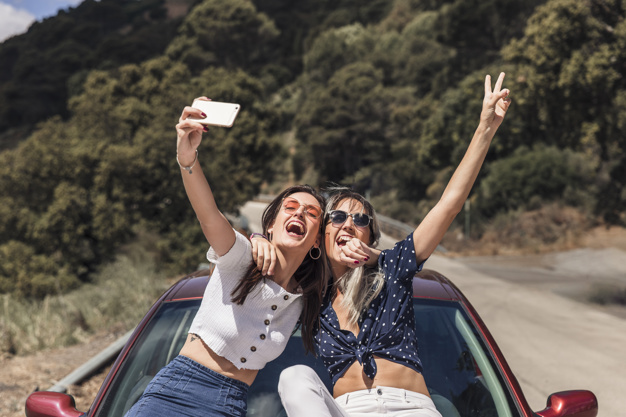

Você já cansou de ver as pessoas tendo sucesso na vida, aquela saúde boa, emagrecendo, ficando com o corpo bonito e parecendo mais jovens a cada dia enquanto você continua na mesma depois de ter tentado de tudo? Então isso aqui é para você!
Quando falamos de emagrecer e ter uma vida saudável, são nossos hábitos que precisam de uma mudança. Quer alguns exemplos de hábitos que te fazem mal?
A primeira coisa que você precisa colocar na sua mente para ter uma vida saudável e prosperar (vale até para ganhar dinheiro essa dica) é que são os seus hábitos que te guiam, ou seja, é aquele comportamento que você tem todos os dias que te faz conseguir as coisas.
Comer em qualquer horário
Dormir pouco ou dormir demais
Não estar em paz com seu espírito
Não praticar algum esporte
Todos nós sabemos disso, mas o que isso lhe trouxe de novidade? Se quiser descobrir, temos um pequeno desafio para te propor. Ele viralizou pelas mídias sociais e já ajudou milhares de pessoas à alcançar o próximo nível. Vamos lá!
Ah, antes de mais nada: É importante que você divulgue o seu progresso para as pessoas próximas, pois sempre que compartilhamos uma meta temos mais motivação para continuar, e quem diz isso não somos nós, são todos os especialistas em desenvolvimento pessoal, basta dar uma procurada no Youtube ou Google.
Não se esqueça de usar a hashtag #super7 em cada postagem para fazer parte do desafio!
Dia 1: Hidratação do seu corpo
Aqui você deve buscar entender os benefícios da água para seu organismo: ela ajuda seus órgãos, te ajuda a emagrecer e além disso, é um dos principais combustíveis para seu corpo. É recomendável tomar 1 copo de água fria ao acordar, todas as manhãs.
Sua meta é postar no Facebook ou Instagram 4 fotos tomando água, uma logo de manhã quando acordar, outra antes do almoço, outra antes da janta e uma antes de dormir, e em cada uma delas você irá deixar uma mensagem motivacional para as outras pessoas dizendo o quão importante é beber água. Simples assim!
Dia 2: Os benefícios dos exercícios físicos
Neste dia seu objetivo é conhecer as vantagens que os exercícios físicos poderão te trazer.
Sabia que praticar exercícios físicos diariamente por pelo menos 30 minutos aumenta sua imunidade, reduz seu estresse, elimina toxinas do organismo e além de todos esses benefícios ainda queima calorias?
Mas não é só isso (como se isso já fosse pouco, né?), os exercícios físicos aceleram seu metabolismo, ou seja, você conseguirá queimar algumas calorias até quando não estiver fazendo nada!
Só não pode exagerar e nem fazer isso de forma desesperada, se você não pratica esportes com frequência, faça uma pequena caminhada na rua mesmo, algo leve, e sempre que possível leve alguém para andar com você.
Sua meta para este dia é postar no facebook ou instagram duas fotos, uma de manhã e outra de tarde. Nelas você deve estar fazendo algum exercício físico e você precisa incluir uma mensagem motivacional para incentivar as outras pessoas a fazerem também, simples assim!
Vale caminhada, corrida, bicicleta, qualquer exercício que você possa compartilhar!
Dia 3: Desintoxicação do seu organismo
Aqui nós vamos ver a importância de tirar do seu corpo essas coisas tóxicas que te fazem mal e estão te matando aos poucos sem você saber.
Para retirar do seu organismo essas toxinas você precisará primeiro parar de comê-las, esse é o passo mais importante. Devemos evitar alimentos muito gordurosos, com muitos aditivos químicos e corantes. Seu organismo precisa se esforçar muito para dar conta deles, e por conta disso você acaba inchando e se sentindo mal.
Isso quer dizer que nunca mais vou poder comer aquela coxinha cheia de óleo que é uma delícia, ou aquele bolo de pote de brigadeiro?
Claro que vai poder! Mas é de vez em quando, e não pode comer muito.
Uma alimentação ruim e intoxicante pode te fazer sentir cansaço além do normal, te deixar com dores no corpo, seu cabelo fica ruim, traz várias doenças e acredito que o mais assusta as mulheres, te engorda!
Existem dietas para quem quer desintoxicar o organismo, elas se chamam Detox, não precisa seguir elas à risca, mas aprender como funcionam e os principais alimentos já é um bom começo.
Sua meta para este dia é postar no Facebook ou Instagram duas fotos: Uma durante o dia e outra durante a noite mostrando para as pessoas que você está comendo alguma coisa desintoxicante, existem diversas opções, como couve, frutas cítricas, alimentos com boas quantidades de água, como saladas, etc.
Junto com as fotos você deve mandar uma mensagem motivacional para que as outras pessoas não desistam e para mostrar a elas que você está conseguindo!
Dia 4: A importância de uma alimentação saudável
Bom, agora que você sabe o bem que organismo hidratado te faz, sabe que os exercícios físicos são muito bons e está com o corpo desintoxicado, iremos conhecer mais sobre a alimentação saudável.
É importante ver que uma alimentação saudável não é feita apenas com alimentos detox, aqui você pode abusar de saladas, alimentos naturais e frutas também, mas o que é mais crucial:
Você deve comer porções menores de comida, mas nos intervalos de tempo corretos!
Sabe quando o nutricionista te disse que precisa comer de tantas em tantas horas e mastigar direito? Então, é nesse ponto que gostaríamos de entrar. Comer corretamente ajuda seu corpo a processar os nutrientes e faz uma melhor distribuição deles pelo organismo.
Além de que, ao comer menos nos intervalos corretos você não sentirá fome enquanto come uma quantidade menor de comida, assim você consegue perder peso sem sofrer.
Sua meta para hoje é postar no Facebook ou Instagram uma imagem de um prato saudável que você irá comer. NÃO vale pegar da internet, só isso, neste dia pegamos leve e deixamos tranquilo. Ah, e não esquece da mensagem motivacional para as outras pessoas, fecho?
Dia 5: Limpando a bagunça da mente
Estamos chegando ao fim dos 7 desafios, que demais! Nossos sinceros parabéns por chegar até aqui.
No quinto dia você vai fazer algo diferente... Você irá meditar! É isso mesmo, meditar!
"Mas não sei fazer isso..."
"Ai meu deus, que baboseira, como que vou perder peso sentada e respirando?"
Essas são dúvidas comuns para quem lê isso pela primeira vez, e é normal. Mas vamos às explicações: A meditação tem como objetivo organizar essa bagunça que está na sua cabeça, te ajuda a limpar seus pensamentos e traz paz de espírito.
Sabia que grande das pessoas obesas chegaram neste ponto por ansiedade? Sabe o que leva uma pessoa a ter ansiedade?
A meditação é uma excelente aliada no tratamento da ansiedade, tanto que vários profissionais e personal trainers recomendam esta prática. Se você meditar apenas 15 minutos todos os dias já é o suficiente para você sentir que está mais leve, seu espírito mais limpo e sua mente mais organizada.
Sua meta então será postar apenas uma foto no Facebook ou Instagram meditando, se não estiver acertando pra tirar ela por conta própria, peça ajuda de algum amigo ou familiar.
Ahh, não se esqueça de convidar todo mundo! Essa viagem se torna mais agradável e mais fácil ao lado de pessoas conectadas com o objetivo. :)
Dia 6: Precisamos parar e admirar as belezas do mundo

Força, você está quase lá!
No penúltimo dia do desafio você conhecerá os benefícios da contemplação. Esta prática melhora sua auto-estima, seu carisma, te torna mais atraente e além de tudo isso faz muito bem para sua inteligência emocional. Sabe quando alguém te irrita e você quer por fogo nele? A inteligência emocional te ajuda a controlar isso.
Esta é uma prática que complementa a meditação, então com o tempo você conseguirá fazer as duas juntas sem problemas.
Pare por 10 minutos para pensar na vida, na sua vida. Lembre-se das coisas boas que já fizeram para você, das coisas boas que você já fez para os outros. Observe as outras pessoas, os carros, as crianças e os animais.
Veja como a vida acontece, sem julgar, sem tentar entender, apenas olhe. Se você tiver como ir até algum lugar bonito, faça isso.
Por fim, agradeça para você mesmo por tudo de bom que sua vida trouxe e pelos ensinamentos que teve.
Sua meta para o penúltimo dia então é postar no Facebook ou Instagram uma imagem de um lugar bonito (Essa você pode pegar na internet essa). Junto com a imagem, compartilhe uma lembrança boa de algo que fizeram para você e te deixou alegre, se puder, marque essa pessoa para que ela sinta sua gratidão. Tenho certeza que este dia irá te fazer se sentir muito contente e com mais ânimo para a próxima etapa do ciclo .
Dia 7: Chegou a hora do descanso
Chegamos ao fim...
Não fique triste, pensando que acabou, lembre que estes desafios são um ciclo e no próximo dia você poderá continuar a aplicá-los. No último dia você deve apenas descansar, tirar um tempo maior que o de costume para seus amigos e sua família, dar umas boas risadas, fazer aquele almoço que está com vontade.
Sua meta para hoje é a mais comum das redes sociais. Hoje você irá postar uma foto com sua família ou seus amigos (olha que fácil), quanto mais pessoas na foto melhor. Marque todas elas na imagem e diga o quão feliz você é hoje por ter conhecido elas, isso servirá de motivação para mais pessoas e você será um exemplo a ser seguido.
Por fim, durma bem pois no próximo dia começamos tudo outra vez.
Parabéns!!!
Meus parabéns para você que conseguiu completar ao menos uma vez o ciclo, tenho certeza de que você já é capaz de sentir os benefícios de uma vida saudável, veja as pessoas interagindo com suas publicações, olhe quantas pessoas você conseguiu influenciar a viver bem!
A cada ciclo compartilhado você conseguirá atingir mais e mais pessoas, é assim que as coisas funcionam nas mídias sociais. Fique à vontade para compartilhar este artigo com todos que você acredita que serão capazes de seguí-lo.
Se você gostaria que alguém fizesse isso, mas essa pessoa não está colaborando, faça um desafio para ela, apostem por exemplo quem irá fazer o jantar ou então, diga que vai postar aquela foto bem feia do churrasco na chácara de fim de ano se ela não participar.
Enfim, tente convencer mais pessoas a ter estes hábitos, cada um que tiver uma vida saudável por uma motivação vinda de você será uma vida mais feliz no mundo, e, que você poderá dizer com certeza que ajudou! Seja a diferença :)